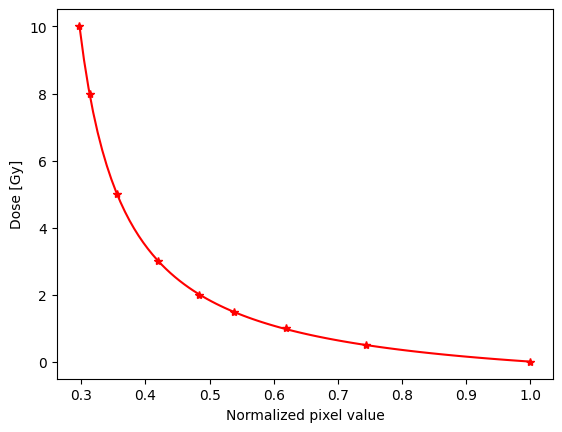
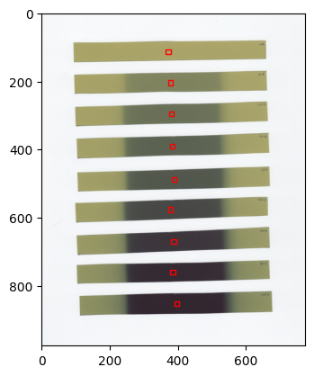

How to get data used for film calibration#
The next code shows how to get film response, fit coefficients, mean and std of pixel values in a region of interest.
Note: This code works with Dosepy version 0.7.0
from Dosepy.image import load
# Handle the .tif image
path_to_file = "/home/luis/Documents/GitHub/dpv6/image.tif"
cal_image = load(path_to_file, for_calib = True)
# Create the calibration object. Use the red channel and ROIs of 16 mm x 8 mm.
imparted_doses = [0, 0.5, 1, 1.5, 2, 3, 5, 8, 10]
cal = cal_image.get_calibration(
doses = imparted_doses,
channel = "R",
roi = (16, 8),
func = "RF"
)
# Plot the curve
cal.plot()

<Axes: xlabel='Normalized pixel value', ylabel='Dose [Gy]'>
# Show film response (x = I0/I), where I0 and I are the mean
# pixel value of the unirradiated and irradiated film, respectively.
cal.x
[np.float64(1.0),
np.float64(0.7442201162843932),
np.float64(0.6183445497413359),
np.float64(0.5386851622945567),
np.float64(0.48411390376779745),
np.float64(0.4201803781531841),
np.float64(0.355148102366891),
np.float64(0.3132124708144486),
np.float64(0.29712035892505606)]
# Show the fit coeficients, a, b and c of the fit function (y= -c + b/(x-a))
cal.popt
array([0.22710783, 0.77046506, 0.9874817 ])
# Show roi and mean pixel values
cal_image.get_stat(ch="r", roi=(5, 5), show=True)

([43695, 32435, 26940, 23485, 21061, 18302, 15507, 13686, 12991],
[150, 161, 162, 109, 125, 119, 115, 109, 156])